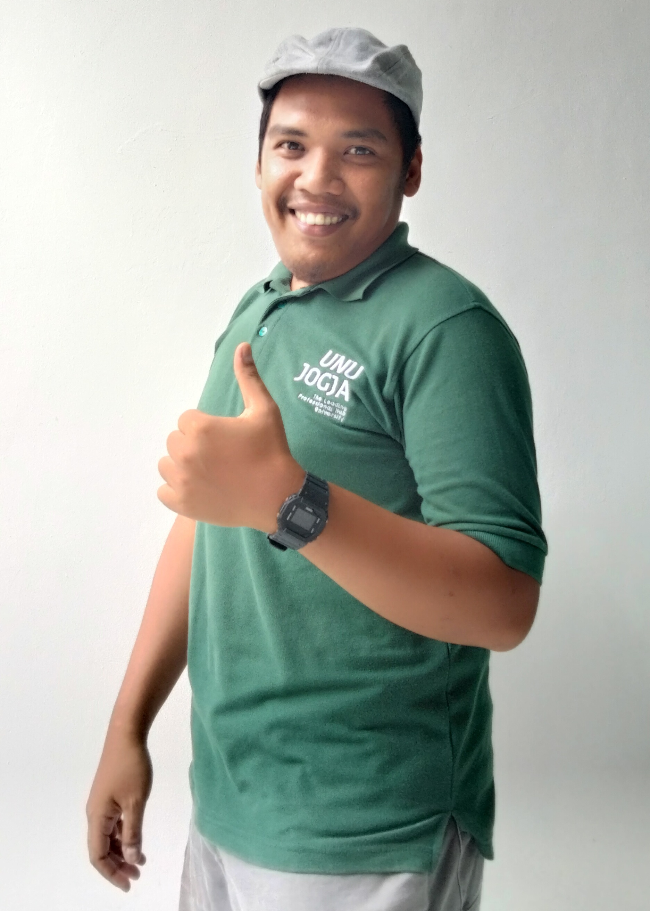

Lecturer · Researcher · Full-Stack Developer
Building bridges between academia and technology — from IoT-powered waste management systems to intelligent mobile applications that serve communities.

I am a Lecturer, Researcher, and Full-Stack Developer who believes technology should serve humanity — solving real problems from waste management to community health.
My journey started with Pascal and Delphi, then evolved to Java for Android development and PHP for web services. When I saw Android emerge, I thought: "This is the future of tech." That instinct drove me to master mobile development and build backend APIs that power real-world applications.
Currently pursuing a Ph.D. in Mechanical Engineering at Kasetsart University, Bangkok, focusing on "Zero Waste Society" — combining my IoT expertise with sustainable engineering to create technology that genuinely improves lives.
Developing smart systems — from smart recycle bins to automated guided vehicles using IoT and big data.
Published researcher with Scopus-indexed papers, national grants, and intellectual property rights.
Full-stack developer mastering Android, PHP, Java, and web technologies with over a decade of experience.
Kasetsart University, Bangkok, Thailand
Faculty of Engineering, Concentration in "Zero Waste Society". Pursuing Ph.D. degree with focus on sustainable waste management and biomass conversion technologies.
Universitas Atma Jaya Yogyakarta
Concentration in "Innovation of Computational Science". Deepened expertise in computational methods, information systems, and software engineering.
Universitas Teknologi Yogyakarta
Concentration in "Database". Built a strong foundation in programming, database management, and software development methodologies.
Kasetsart University, Bangkok
Researcher in Waste & Biomass Conversion Laboratory (WBC-Laboratory), Department of Mechanical Engineering, Faculty of Engineering. Conducting advanced research on sustainable waste-to-energy conversion systems.
Universitas Nahdlatul Ulama Yogyakarta
Permanent lecturer in Computer Engineering Undergraduate Program. Teaching, mentoring students, leading research projects in IoT and waste management systems. Functional position: Lektor (III/b).
JMC IT Consultant
Ensuring development project work goes well, reporting to the Marketing Manager. Collaborating with R&D, Production, and Clients to deliver quality IT solutions.
CV. Threepreneur
Information Technology startup focusing on IT solutions and procurement. Successfully managed projects for Government Agencies handling very large datasets (Big Data).
Leading a personal team serving both individual and group requests. Specializing in complex work areas with limited resources, consistently delivering on time.
Development of IoT-based smart trash can with Big Data integration for waste management supporting sustainable development.
Applying Big Data Technology and Prototyping Methods for comprehensive waste management.
Application of Supply Chain Management and Internet of Things in a Sustainable Waste Management System.
Optimizing the Potential of Robotics in Logistics Automation Through Downstreaming Expertise.
Integrated smart waste weighing system in Pleret Village to improve environmental and community health.
Development of Prototype Automated Guided Vehicles for the Warehouse Sector at PT Stechoq Robotika Indonesia.
Co-Author
Co-Author & Developer
Co-Author & Developer
Author · ISBN: 978-623-8708-03-1
Author · ISBN: 978-623-88550-0-1
Co-Author · SDGs Book
S00202413448
000572647
000571916
000548016
000374119
000392542
I'm always open for research collaborations, project discussions, or academic partnerships. Feel free to reach out.
S.Kom., M.Kom.
Lecturer · Researcher · Developer